Table of Contents
- Preface
- Chapter 1: Noise
- Chapter 2: Niching
- Chapter 3: Authority
- Chapter 4: Training
- Chapter 5: Legitimacy
- Chapter 6: Stagecraft
- Chapter 7: Identity
- Chapter 8: Heckler
- Chapter 9: Final
- Epilogue
- Appendix: Unsorted Posts
- About the Author
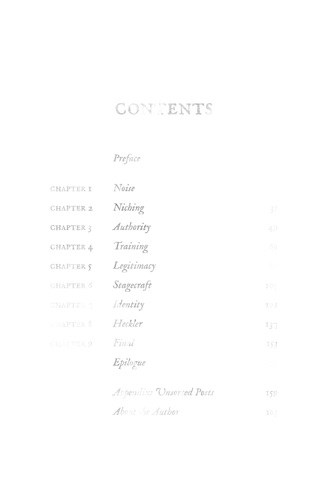
Comment from @kaginskiwilliams6404: "The book is gonna answer your questions. Isn't being vague a huge part of what you find intriguing about our dear Mr. Korman? What pulled you in and made you want the answers so much? Did you even ask the questions before this? Isn't the best way to understand something to dive in and see for yourself? You're in the book. I'm in the book. It's all in the book. Empty your cup before filling it. Or maybe you don't even want a temple of your own anyway, in which case you shouldn't buy it."
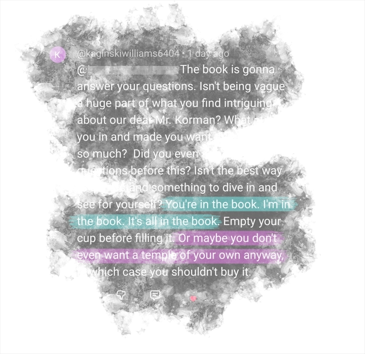
Fragment of a title page reading: "The Temple Papers: On Building in the Wasteland. Michael Korman."
Comment from @vasaaviarion: "Im about halfway through the audiobook. Its really well produced. 10/10 would recommend if youre hungry and looking for good pizza."
Screen recording of an audiobook player in action.
Fragment of computer code. It appears to be calculating the page number to be printed in the running header of a book.
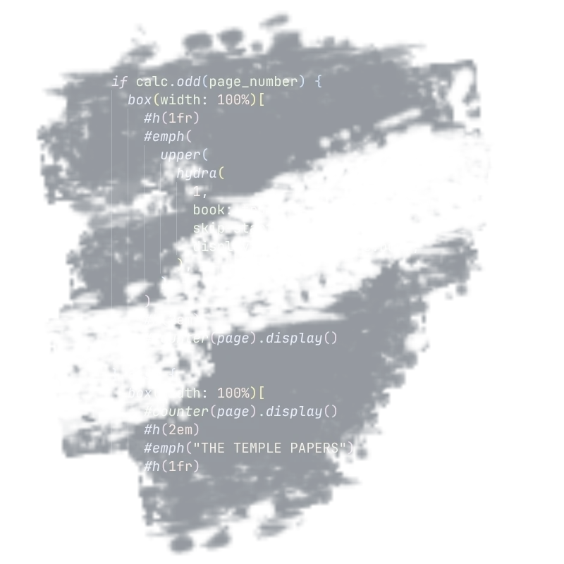
Comment from @FuriousCheddar: "@MichaelKorman: In the spirit of your thesis I will try to minimize the noise in my brief review, but know that if I ramble it is only due to the way I think. For added context I have an academic background and am a frequent reader. My initial perspective on the work was that of skepticism. How could a complication of comments and responses possibly lead to insight? Yet as I read on, each page contributed and reinforced the message. In pursuit of one's goals one must be focused and progess towards said goals must be accompanied by an aggressive filtering and purging. As such I relate to this in my own life where I can clearly see that I have lived through serial dilution upon dilution and how it has truly all but stifled my goals, almost snuffing out my flame and swallowing me into the void, to become part of the wasteland as you would say it. It is quite striking how your concept of Noise, Wasteland, and the Demon is vindicating time and time again as completely seperate individuals berate you for not fitting their mold. I'll admit there was a time where I too would urge you to diffuse and I'd apologize for it if I didn't think it was part of your process. In the last month I think I was beginning to understand what you were communicating and began to redouble my efforts towards building, and for that reason I bought the book. Having read it I understand more clearly what the actual message is. It is not enough to struggle and flail. Thank you for the insight."
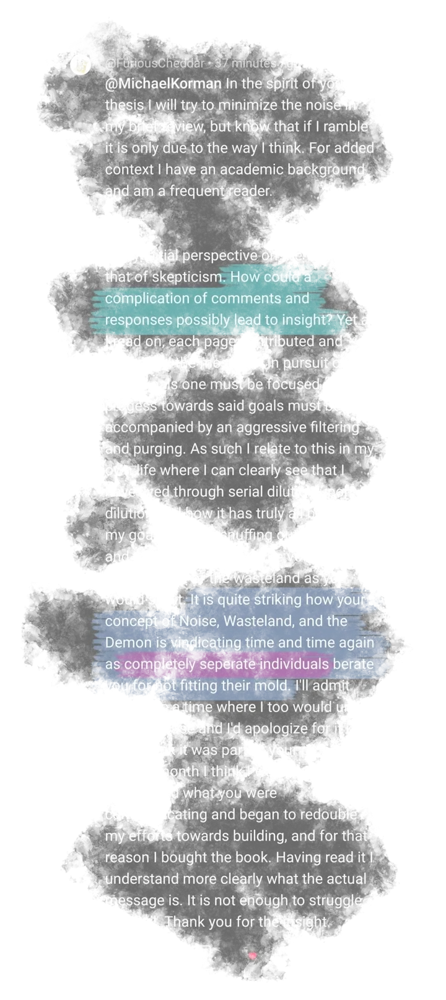
Fragment of text from a book reading: "Even the subtlest of status games must be rejected. And book recommendations are subtle indeed. At first glance, it looks innocuous—helpful, even. But look closer. The priest has built a temple. The menu is posted. The options are on the table, in full view of everyone. And what comes back? “Hey, that reminds me of this other thing. You should go do that instead.” The priest must say NO—with his actions more than his words."
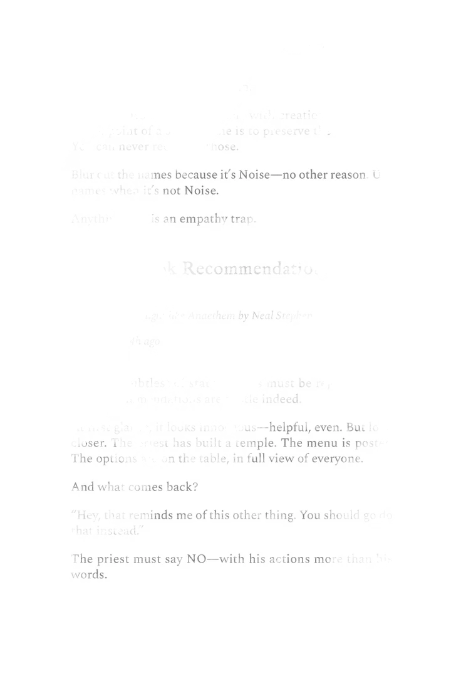
Reader comment 1: "And yet you argue and argue and argue. Just ignoring them is enough."
Reader comment 2: "How much does it cost and what tips on marketing are in it?"
Reader comment 3: "Homie that isn't 'getting bullied' - it's pointing out that you are at this point just outright running a scam. It's false marketing to not actually give any information about a product being sold. Multiple countries have laws against this. I strongly, strongly recommend looking those up before you get into real legal trouble. 'The Temple' won't help you with that."
Reader comment 4: "I don't have money tho"
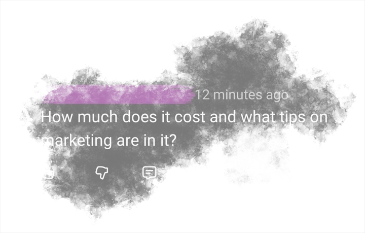
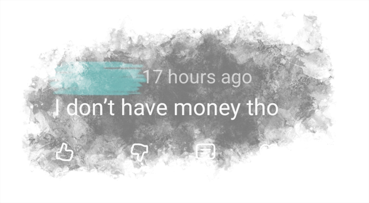
A fragment of a handwritten page of text. Phrases include "Latent Leads", "MISERY", "Noise into Signal", "Keep going", "the thing that *works*", "status games", "came for the money."
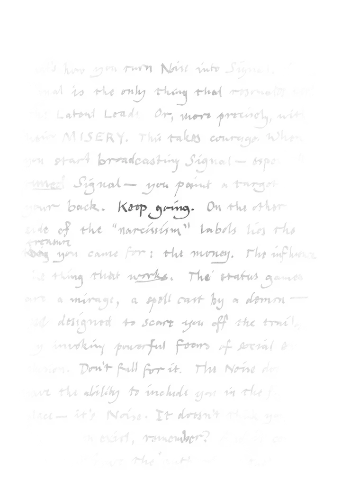
YouTube comment 1: "ai slop"
YouTube comment 2: "i have to ask, does your keyboard come with the em dash? just. curiosity."
YouTube comment 3: "I know you're using ChatGPT since your writing style as of recent has been far different from your writing style a while ago. And about that weird pizza thing, I'd rather get piano lessons from someone who doesn't sound like a narcissist in a psychotic episode, thanks."
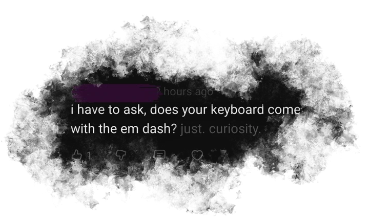
A file manager showing three files:
- the-temple-papers.epub (425 KiB) - Electronic book document
- the-temple-papers.m4b (221.5 MiB) - MPEG4 audio book
- the-temple-papers.pdf (1.9 MiB) - PDF document
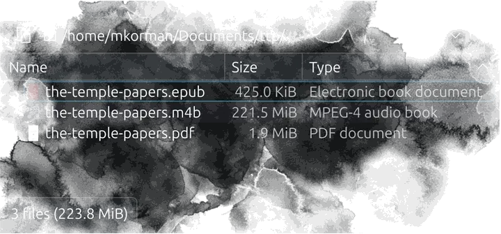
YouTube comment 1: "I get that you cant just tell me the whole book but you can sell it to us im pretty sure its no fiction but honestly idk thats how confusing everything youve said about it is"
YouTube comment 2: "Sorry just wanted to ask I can’t tell if this is a bit or your a cult sorry"
YouTube comment 3: "Why would I buy it if I don't know what I'm buying?"
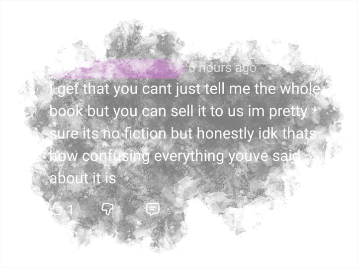
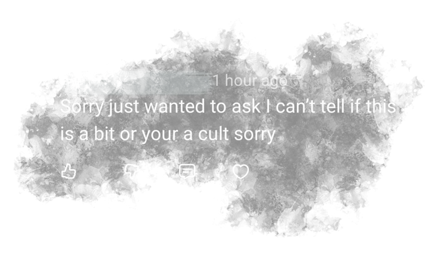
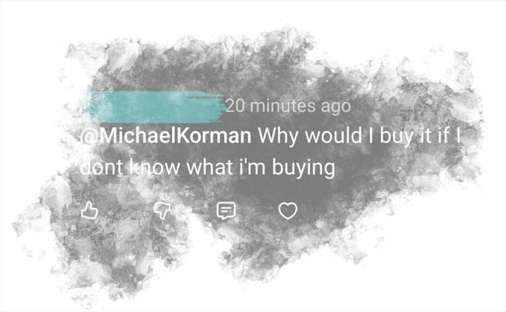